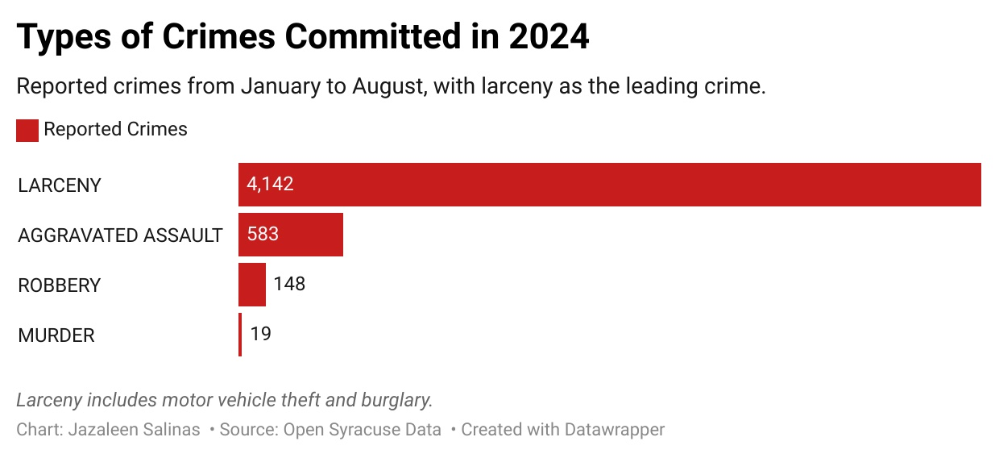
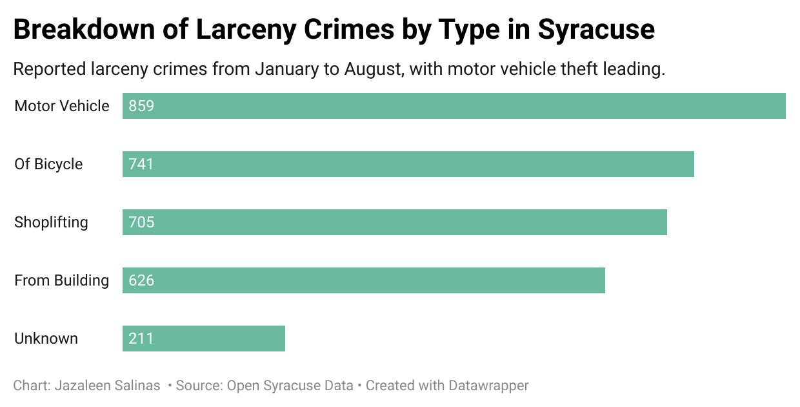

By Jazaleen Salinas
Credit: Shutterstock.
The Syracuse Police Department is taking decisive action against larceny, introducing stricter enforcement measures to address the city’s most reported crime.
A key change involves aggregate larceny laws, which now reclassify certain thefts as federal offenses rather than misdemeanors. This shift aims to impose tougher penalties on repeat offenders and high-value cases, signaling a zero-tolerance stance.
Larceny, which includes motor vehicle theft and burglary, accounted for 4,142 reported incidents between January and August 2024. This figure represents an 8% increase compared to last year. This sharp rise has heightened concerns about property crimes and their impact on residents and businesses.
Beyond legislative changes, the Syracuse Police Department is implementing several community-oriented initiatives to address property crime.
Syracuse Police Department Public Information Specialist Kieran Coffey says a retail theft task force operates at Destiny USA Mall to target property crime in stores.
Another initiative is the Koper Curve which involves officers patrolling neighborhoods on foot, to speak with neighbors to see if any issues need to be addressed.
These measures are not only about enforcing the law but also building trust with the public. By being visible and accessible, officers hope to deter potential offenders while reassuring residents that their concerns are being heard and addressed.
After larceny, aggravated assaults are the second most common crime in Syracuse, involving serious violence like domestic incidents or weapon use. Robbery and murder crimes follow behind.
Coffey describes larceny though as a crime of opportunity, highlighting the importance of preventative measures. With holiday shopping in full swing, residents are reminded to take extra precautions.
Items left in plain sight inside vehicles, for instance, are a common target. Coffey urges residents to store items in their homes, or at the very least in the trunk of the car.
Larceny rates typically peak during specific times of the year. Aside from the holiday season, late August and the beginning of September see a surge in thefts, coinciding with Syracuse University students moving back to campus.
Many students, preoccupied with settling in, may forget to lock their cars or store belongings safely inside their dorms, creating opportunities for theft.
Around the Syracuse University campus, larceny has only increased by 7% in the southeast. In the southwest, it has decreased by 10%. However, the North district of Syracuse has seen a more significant rise, with larceny incidents increasing by 19.5%.
These regional differences highlight the need for tailored approaches to crime prevention in different parts of the city.
Crime rates fluctuate year by year, but motor vehicle theft remains a particularly pressing issue. Coffey notes that property crimes involving motor vehicle theft have increased by 10% this year alone.
According to CNYCentral.com, Hyundais and Kias were the most common car thefts. This pattern mirrors national trends, where these vehicles are particularly vulnerable due to outdated anti-theft technology in certain models.
To counteract this, the Syracuse Police Department has distributed over 600 free steering wheel locks over two days. This initiative provides a simple but effective deterrent for potential vehicle theft.
While law enforcement is stepping up its efforts, community members also play a vital role in reducing larceny. Small, proactive steps can make a significant difference in preventing property crime.
Coffey emphasizes the importance for people to secure their valuables, out of sight, whether in their car, home, or workplace.
Residents are encouraged to invest in basic security measures, such as motion-detecting lights, security cameras, or alarm systems. Simple devices such as doorbell cameras can deter offenders by increasing the risk of being caught.
These tools not only protect individual properties but also contribute to the overall safety of the neighborhood.
Officials also stress the importance of reporting anything unusual or suspicious. Quick action can prevent minor incidents from escalating into larger crimes. Residents should remain vigilant and communicate with law enforcement to help create a safer community.
The Syracuse Police Department’s efforts to address larceny reflect a broader commitment to improving public safety. By combining stricter enforcement with community engagement, they aim to create a city where residents and businesses can thrive without the constant threat of property crime.
Coffey notes that the overall crime rate decreased by 7% this year, suggesting that collaborative efforts are starting to yield results. He encourages residents to take preventive steps year-round though, not just during peak seasons.
Officials emphasize the importance of partnerships between law enforcement and the community, noting that lasting change requires mutual trust and consistent effort.
As the holiday season continues, the department’s message is clear: through vigilance, collaboration, and proactive measures, Syracuse can reduce larceny.